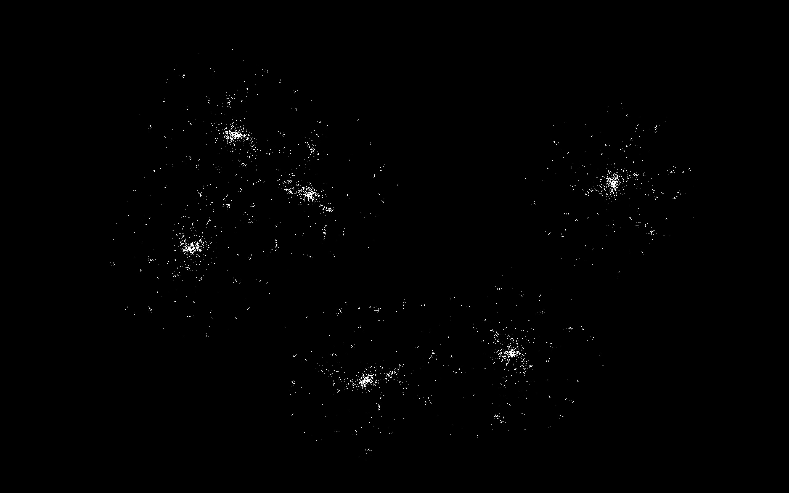

Competition
Parallel Galaxy Evolution Simulator
We implemented a galaxy evolution simulator using two kinds of algorithms: Barnes-Hut algorithm and Morton-Code
based algorithm. Then, we paralleled these sequential algorithms using CUDA and compared the performance
on latedays cluster that has NVidia Tesla K40m.
Major Technical challenges
-
The first technical challenges is to implement the sequential algorithms correctly. We came out with the
second
sequential algorithm based on the idea in this paper that introduces a parallel version of N-body problems.
The reference can be
found here.The implementation in this paper is complex since it involves lots of parallel techniques
to speedup the program. It takes time to understand how the algorithm works and then come out with the
sequential algorithm.
-
Compact layout tree construction in GPU. In host machine setting, we can allocate new tree nodes on-the-fly.
However, in GPU setting, we need to allocate space for the tree ahead of time. The tree insertion and tree
treversal are also not as straightforward as host machine setting.
-
Iterative tree traversal in CUDA Barnes Hut algorithm. Since in a CPU setting, a program can recursively
traverse the whole tree, seldomly having to worry about stack size limit. However, since we are building the
tree in GPU in a compact layout, we need to use iterative method to traverse the tree. Although it is still
viable to use recursive method to do it, it is not efficient. Using recursive method also poses huge thread
divergence problem.
Preliminary Result

Figure 1. sequential Barnus-Hut without bounds
Figure 1 depicts the spiral pattern of galaxy evolution using sequential Barnus-Hut method.
 Figure 2. sequential Barnus-Hut with bounds
Figure 2. sequential Barnus-Hut with bounds
Figure 2 depicts the spiral pattern of galaxy evolution using sequential Barnus-Hut method
and also the
bounds of quad-tree in that iteration during the simulation period.
Figure 3. sequential MortonCode with bounds
Figure 3 depicts the spiral pattern of galaxy evolution using sequential MortonCode method
and also
the bounds of the morton tree during the iteration period. This picture also shows the different bound
pattern
since the way to build the tree is different compared with the previous Barnus-Hut's Quad-Tree.
| # |
Algorithm Version |
Total Time (ms) |
Time Per Iteration (ms/iter) |
| 1 |
seq Barnus-Hut |
36280.33 |
90.70 |
| 2 |
cuda Barnus-Hut |
TBD |
TBD |
| 3 |
seq Morton-Code |
64027.15 |
160.07 |
| 4 |
cuda Morton-Code |
4779.26 |
11.95 |
Table 1. Performance comparison table
Table 1. shows the performance comparison between different versions of algorithm under
the same condition that 2 galaxies and each galaxy has 1000 particles, the galaxy size is 100 and the
simulation lasts for 400 iterations.
As it shows, we achieve 13.4x speedup for the cuda version and sequential version for Morton-Code
algorithm.
 Figure 4. performance comparison of the four versions (TBD)
Figure 4. performance comparison of the four versions (TBD)
Figure 4 depicts performance of the two algorithms with sequential and parallel version.
Summary of the Expected Show
-
we'll demo a short video of the galaxy simulation and shows the performance speedup after using parallel
techniques.